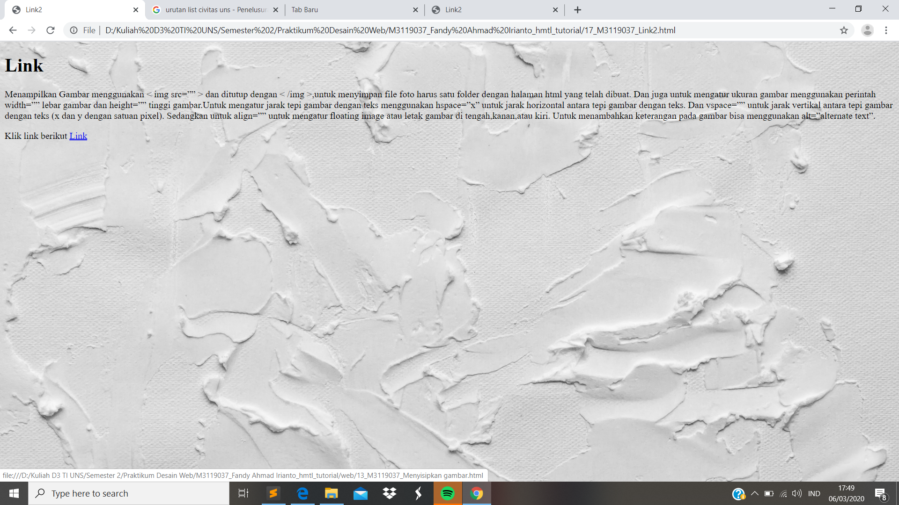

Membuat Link
//Link atau Hypertext merupakan pembuatan text yang nantinya apabila text tersebut diklik maka akan menuju ke laman lain. Perintah yang digunakan yaitu <a> dan diakhiri dengan </a>
Codingan
<!DOCTYPE html>
<html>
<head>
<meta charset="UTF-8">
<title> Link2 </title>
</head>
<body style ="background:url(background.jpg); background-repeat: no-repeat; background-size: cover;">
<h1>Link</h1>
<p>Menampilkan Gambar menggunakan < img src=”” > dan ditutup dengan < /img >,untuk menyimpan file foto harus satu folder dengan halaman html yang telah dibuat. Dan juga untuk mengatur ukuran gambar menggunakan perintah width=”” lebar gambar dan height=”” tinggi gambar.Untuk mengatur jarak tepi gambar dengan teks menggunakan hspace=”x” untuk jarak horizontal antara tepi gambar dengan teks. Dan vspace=”” untuk jarak vertikal antara tepi gambar dengan teks (x dan y dengan satuan pixel). Sedangkan untuk align=”” untuk mengatur floating image atau letak gambar di tengah,kanan,atau kiri. Untuk menambahkan keterangan pada gambar bisa menggunakan alt=”alternate text”.
</p>
<p>Klik link berikut
<a href = "web/13_M3119037_Menyisipkan gambar.html"> Link </a>
</p>
</body>
</html>
Tampilan Hasil Percobaan

Kesimpulan
Pada percobaan Hypertext atau membuat link ini kita dapat meletakkan laman yang akan kita tuju dengan menggunakan perintah <a>.Untuk yang akan kita tuju yakni folder yang terdapat padan satu file yang sama. Ketika cursor diarakan ke link maka akan muncul posisi folder yang dituju.